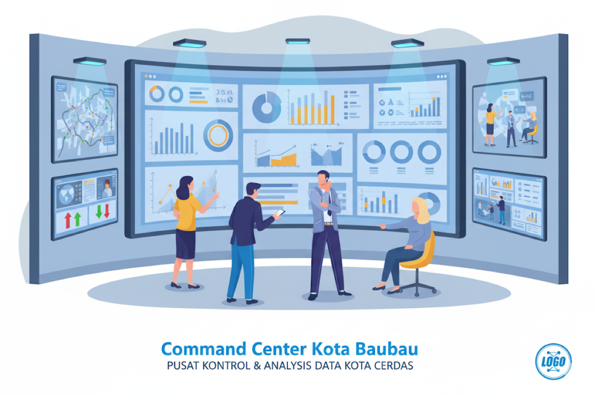

Fondasi transformasi digital Kota Baubau ditopang oleh tiga pilar infrastruktur utama yang bekerja secara sinergis: Jaringan Internet Terpusat, Command Center sebagai pusat kendali, dan Data Center sebagai inti penyimpanan data. Ketiganya membentuk ekosistem yang memungkinkan layanan digital berjalan secara efisien, aman, dan andal.
Mengintegrasikan seluruh jaringan internet OPD untuk efisiensi, standardisasi, dan pemerataan akses.
Pusat kendali terpadu untuk monitoring, koordinasi, dan pengambilan keputusan berbasis data secara real-time.
Fasilitas terpusat yang aman untuk menyimpan, mengelola, dan mengamankan seluruh aset data digital pemerintah.
Pilar ini bertujuan menciptakan sistem pelayanan internet terpusat yang mengintegrasikan seluruh jaringan internet Organisasi Perangkat Daerah (OPD), memusatkan pengelolaan bandwidth di bawah kendali Diskominfo, dan mewujudkan pemerataan akses internet di ruang publik, termasuk penyediaan Wi-Fi gratis.

Sentralisasi menciptakan kerangka kerja yang lebih efisien dan konsisten.
Mengurangi biaya operasional, duplikasi pekerjaan, dan meningkatkan koordinasi.
Memudahkan pemantauan kinerja jaringan, deteksi anomali, dan pemeliharaan proaktif.
Mendorong pengembangan arsitektur keamanan siber yang terpusat dan komprehensif.
Command Center berfungsi sebagai "sistem saraf" atau pusat kendali terpadu kota. Fasilitas ini memungkinkan pemerintah untuk memantau, mengkoordinasikan, dan menanggapi berbagai insiden atau layanan publik secara real-time. Ini adalah komponen vital untuk penanggulangan bencana, layanan darurat, dan pengawasan kota yang proaktif.
Pemantauan real-time, koordinasi lintas layanan, dan tata kelola proaktif berbasis data.
Optimisasi alokasi sumber daya, efisiensi biaya respons, dan pemanfaatan data historis.
Peningkatan layanan publik, keamanan kota, serta transparansi dan akuntabilitas.
Integrasi sumber data beragam (sensor, CCTV) dan dukungan keputusan berbasis skenario.
Data Center adalah fasilitas terpusat yang berfungsi untuk menyimpan, mengelola, dan mengamankan semua data digital. Pilar ini merupakan fondasi yang paling penting dari keseluruhan rencana transformasi digital. Ini bukan hanya sebuah repositori, melainkan inti strategis dari seluruh ekosistem.

Keberhasilan dan keberlanjutan seluruh inisiatif digital sangat bergantung pada keandalan, keamanan, dan integritas fasilitas Data Center. Tanpa Data Center yang andal, pilar-pilar lain tidak dapat berfungsi secara efektif.
Tanpa data yang terkelola di Data Center, Aplikasi Satu Data akan menjadi kosong dan tidak berguna.
Command Center bergantung pada aliran data real-time dari Data Center untuk melakukan pemantauan dan analisis.
Tujuan utama dari proyek pemasangan CCTV di ruang publik adalah untuk meningkatkan keamanan dengan mencegah dan meminimalkan tindak kriminalitas. Sistem ini akan terhubung dengan Command Center untuk memungkinkan pemantauan dan penanganan yang cepat. Selain itu, beberapa titik akan dilengkapi dengan WiFi gratis untuk mendukung pemerataan akses internet.
Berikut adalah daftar sebaran titik pemasangan yang direncanakan di berbagai lokasi strategis di Kota Baubau:
Meliputi beberapa titik di sekitar Lapangan Merdeka untuk pengawasan area publik.
Mencakup titik-titik strategis di Taman Segitiga untuk keamanan dan kenyamanan pengunjung.
Pemasangan di sepanjang jalan-jalan utama untuk memantau lalu lintas dan keamanan.
Termasuk di dalamnya area perkantoran, sekolah, dan fasilitas umum lainnya.
Data lokasi detail diekstrak dari dokumen perencanaan dan file JSON geospasial.